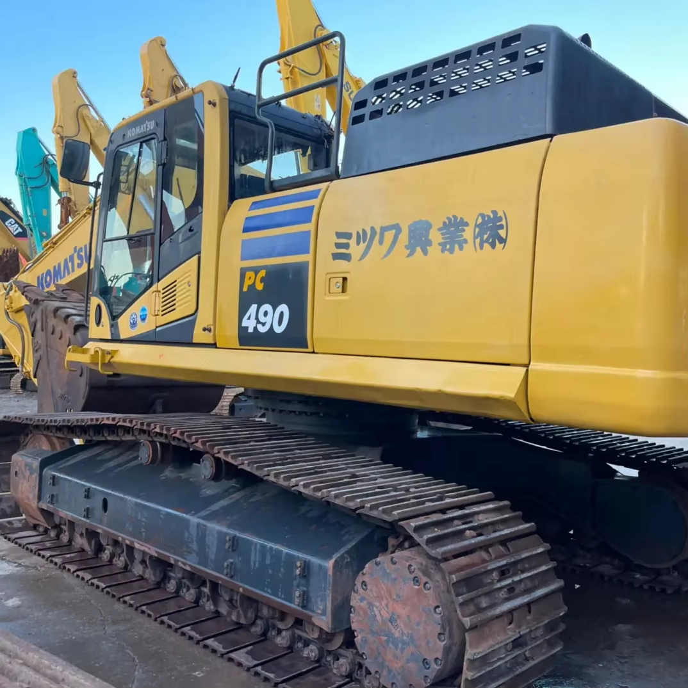

Refurbished Komatsu PC490 Excavator
The Komatsu PC490 is a 40-ton hydraulic crawler excavator designed for demanding construction and mining projects. Known for its strength, durability, and advanced technology, the PC490 excels in a variety of heavy-duty tasks, including earthmoving, excavation, material handling, and lifting. For contractors looking to maximize value while ensuring reliability, a refurbished Komatsu PC490 presents an excellent option, combining cost-effectiveness with the performance of a machine built for tough conditions.
Honestly, it's almost impossible to buy a brand new excavator from China. They either don't exist or are made in China. If a Chinese seller tells you their Caterpillar/Komatsu/Volvo/Kobelco/Hitachi is brand new, they're lying. Therefore, a refurbished excavator is your best bet.

Here are the detailed specifications for a refurbished Komatsu PC490LC-11 excavator:
Operating Weight and Dimensions
- Operating Weight: 35,000–36,300 kg
- Overall Length: ~12.0 meters
- Overall Width: ~3.2 meters
- Overall Height: ~3.4 meters
- Tail Swing Radius: ~3.6 meters
- Ground Clearance: ~500 mm
- Track Width: 600–800 mm standard
Engine and Powertrain
- Engine Model: Komatsu SAA6D125E-7 (EU Stage IV / Tier 4 Final)
- Rated Power Output: 271 hp (202 kW) @ 2,000 rpm
- Maximum Torque: ~1,100 Nm
- Fuel Tank Capacity: ~580 liters
- Travel Speed: 3.4–5.6 km/h
- Swing Speed: ~9.5 rpm
- Gradeability: Up to 70% (35°)
Hydraulic System
- Main Pump Type: Closed Center Load Sensing (CLSS) axial piston pumps
- Flow Rate: ~2 × 280 L/min
- System Pressure: Up to 34.3 MPa
- Hydraulic Oil Capacity: ~300 liters
- Boom Cylinder Bore: ~150 mm
- Arm Cylinder Bore: ~130 mm
- Bucket Cylinder Bore: ~120 mm
Performance Metrics
- Bucket Capacity: 2.0–2.25 m³ (SAE heaped)
- Max Digging Depth: ~7.6 meters
- Max Reach (Horizontal): ~11.2 meters
- Max Dump Height: ~7.5 meters
- Bucket Digging Force: ~220 kN
- Arm Digging Force: ~180 kN
Cab and Operator Features
- Cab Type: ROPS/FOPS certified
- Display: High-resolution LCD monitor with Eco guidance and diagnostics
- Controls: Electro-hydraulic joysticks with customizable sensitivity
- Comfort: Heated air suspension seat, adjustable armrests, low vibration
- Visibility: Rear-view camera, LED work lights, wide glass area
Smart Features and Efficiency
- Fuel Efficiency: High-pressure common rail injection + variable speed matching
- Emissions Control: Diesel Particulate Filter (DPF) + Selective Catalytic Reduction (SCR)
- Auto Idle Shutdown: Programmable from 5 to 60 minutes
- Telematics Ready: Komatsu KOMTRAX system for remote diagnostics and fleet tracking
Attachments Compatibility
- Standard Bucket: 2.0–2.25 m³
- Optional Tools: Hydraulic breaker, demolition shear, compactor, ripper
- Quick Coupler: Hydraulic or manual options available
- Attachment Memory: Up to 10 presets for tool-specific hydraulic settings
Refurbishment Scope
Refurbished PC490 units typically include:
- Engine overhaul (injectors, turbo, DPF cleaning)
- Hydraulic pump recalibration or replacement
- Electrical system rewiring and sensor testing
- Cab restoration (seat, controls, HVAC, monitor)
- Structural repairs (boom welding, bushing replacement, repainting)
Overview of the Komatsu PC490 Excavator
The Komatsu PC490 is part of the PC series, which has been a staple in the industry for many years due to its advanced engineering and design. With a 40-ton operating weight, it is designed for large-scale tasks such as construction, mining, and quarrying. The PC490 is known for its exceptional power, smooth operation, and fuel efficiency, making it a reliable choice for professionals in need of a powerful machine for demanding jobs.
Key Specifications of the Komatsu PC490 Excavator
-
Operating Weight: 40,000 kg (88,200 lbs)
-
Engine Power: 240 kW (322 hp)
-
Bucket Capacity: 1.8 to 2.5 cubic meters
-
Max Digging Depth: 7.2 meters (23.6 feet)
-
Max Reach: 11.6 meters (38 feet)
-
Travel Speed: 5.3 km/h (3.3 mph)
These specifications make the PC490 an ideal choice for projects requiring high lifting and digging capabilities, along with superior stability and power.
Key Features of the Komatsu PC490 Excavator
Powerful and Fuel-Efficient Engine
The Komatsu PC490 is powered by a 240 kW engine, providing plenty of muscle for large-scale operations. Despite its high power, the engine is engineered for efficiency, optimizing fuel consumption without compromising performance.
-
High-Performance Engine: The PC490 is equipped with a turbocharged, fuel-efficient engine that meets the demands of heavy-duty work while reducing operating costs.
-
Eco-Friendly: The engine complies with environmental regulations while offering impressive fuel efficiency, making it a sustainable choice for long-term projects.
Advanced Hydraulics for Precision Work
The PC490 features a highly advanced hydraulic system that enhances both performance and precision. The hydraulic pumps are designed to optimize power delivery to the machine’s functions, making it ideal for tasks that require fine control, such as lifting heavy materials or digging through tough soil.
-
Load-Sensing Hydraulics: The system adjusts hydraulic flow and pressure based on the load, ensuring that energy is used efficiently. This translates into smoother operation and reduced fuel consumption.
-
Heavy-Duty Components: The machine’s hydraulic components, such as pumps, motors, and valves, are engineered for durability, enabling them to perform under harsh conditions for long periods.
Enhanced Stability and Durability
The Komatsu PC490 is built to handle challenging terrain and heavy loads with ease. It features a large undercarriage, which provides increased stability when working on uneven ground or lifting heavy materials. The durable structure of the machine ensures that it stands up to tough environments, making it perfect for mining and construction sites.
-
Large Track Shoes: The tracks are designed with a wider footprint to ensure better stability on soft or uneven ground.
-
Reinforced Undercarriage: The undercarriage is built to last, with components that are resistant to wear and tear from rough terrain.
Operator Comfort and Efficiency
Komatsu is known for creating operator-friendly cabins, and the PC490 is no exception. The machine’s cabin is designed to provide maximum comfort and convenience, which is crucial for long hours of operation.
-
Spacious Cabin: The cabin is roomy, with excellent visibility all around the machine, allowing the operator to work efficiently and safely.
-
Comfortable Seat: The adjustable seat, air-conditioning, and noise reduction features ensure that the operator can work comfortably in a variety of environments.
-
Advanced Controls: The controls are ergonomically placed, making it easier for operators to perform complex tasks with minimal effort.
Advantages of Buying a Refurbished Komatsu PC490 Excavator
Cost-Effective Solution
Purchasing a refurbished Komatsu PC490 offers significant savings compared to buying a new machine. Refurbished machines are typically priced at 30-40% less than their brand-new counterparts, making them an attractive option for businesses looking to reduce their upfront costs.
-
Lower Initial Investment: The money saved on purchasing a refurbished machine can be used to cover other costs, such as maintenance or additional attachments.
-
Affordable Financing: Many dealerships offer financing options for refurbished models, making it even easier for businesses to add a high-quality excavator to their fleet.
High-Quality Refurbishment Process
When purchasing a refurbished Komatsu PC490, it is crucial to ensure that the machine has undergone a thorough and certified refurbishment process. Key aspects of this process typically include:
-
Engine Overhaul: The engine is thoroughly inspected and repaired, ensuring it performs at its best.
-
Hydraulic System Check: All hydraulic components, including pumps, valves, and hoses, are inspected and replaced if necessary.
-
Undercarriage Inspection: The tracks, rollers, and sprockets are checked for wear and replaced if needed, ensuring the machine’s stability.
-
Electrical System Check: The electrical components, including wiring and sensors, are inspected and replaced as necessary to ensure proper functioning.
-
Cosmetic Restoration: The machine is cleaned, repainted, and restored to improve its overall appearance.
This refurbishment process ensures that the machine performs just like a new one, with the same level of reliability and power.
Proven Reliability and Longevity
Komatsu excavators, including the PC490, are renowned for their reliability. Even after extensive use, they continue to perform at a high level, making them a solid investment for any construction or mining business. With regular maintenance and care, a refurbished PC490 can continue to deliver dependable service for years.
Environmental Benefits
By purchasing a refurbished excavator, you contribute to a more sustainable approach to construction equipment. The refurbishment process reduces the need for new raw materials and energy consumption involved in manufacturing new machines, which lowers the overall environmental impact.
Maintenance Tips for the Komatsu PC490 Excavator
To keep your Komatsu PC490 in optimal condition, regular maintenance is key. Here are some maintenance tips to ensure long-term performance:
Engine and Hydraulic Maintenance
-
Change oil regularly to maintain engine performance.
-
Check hydraulic fluid levels and replace filters as necessary to avoid contaminants in the system.
-
Inspect air filters regularly to ensure proper airflow to the engine.
Undercarriage and Tracks
-
Regularly inspect the tracks, rollers, and sprockets for wear. Replace parts as needed to avoid costly repairs.
-
Lubricate the undercarriage regularly to reduce friction and wear on key components.
-
Check track tension to ensure even wear and prevent unnecessary strain on the machine.
Cabin and Operator Comfort Systems
-
Clean the cabin regularly, and ensure all controls are functioning correctly.
-
Inspect the air-conditioning system to ensure proper climate control during long working hours.
-
Check the seat and adjust for comfort to minimize fatigue during operation.
Conclusion
The Komatsu PC490 is a powerhouse in the world of heavy-duty excavation. It combines high power, fuel efficiency, and durability, making it a reliable choice for contractors who need to tackle large-scale projects. Whether you’re working in construction, mining, or other demanding environments, the PC490 delivers outstanding performance.
Opting for a refurbished Komatsu PC490 offers substantial cost savings without sacrificing reliability or performance. The machine undergoes a rigorous refurbishment process, ensuring that it’s restored to its original condition, ready to deliver years of dependable service. For businesses seeking a high-quality, durable excavator at an affordable price, the refurbished Komatsu PC490 is a wise investment.
Our Commitment
- 2 years / 4000 hours warranty.
- EPA certified.
- No sweatshop labor.
Contacts

- [email protected]
- Youtube Instagram Facebook
- Navigation: G206 (Sishu Bridge) in Changfeng County, Hefei City, Anhui Province, 200 meters north to the east